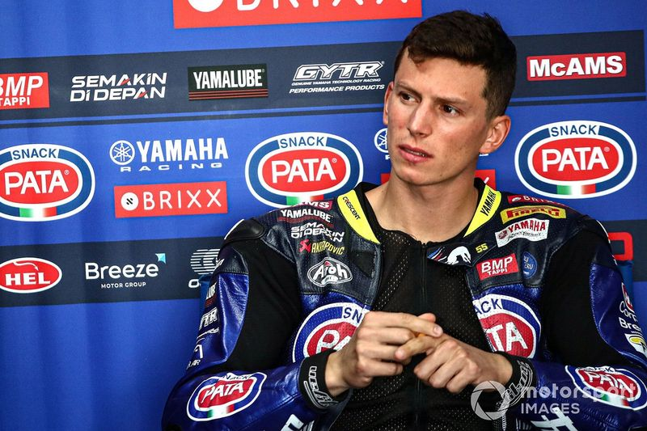

PİLOTLAR
ALVARO
BAUTISTA
TAKIM:
DUCATI ARUBA.IT
Doğum Tarihi:
21-11-1984 (39 yaşında)
Ülke
İspanya
TOPRAK
RAZGATLIOĞLU
TAKIM:
CRESCENT RACING
Doğum Tarihi:
16-10-1996 (27 yaşında)
Ülke
Türkiye
JONATHAN
REA
TAKIM:
KAWASAKI RACING
Doğum Tarihi:
02-02-1987 (36 yaşında)
Ülke
Birleşik Krallık

ANDREA
ANDREA
LOCATELLI
TAKIM:
CRESCENT RACING
Doğum Tarihi:
16-10-1996 (27 yaşında)
Ülke
İtalya
MICHAEL
RINALDI
TAKIM:
DUCATI ARUBA.IT
Doğum Tarihi:
21-12-1995 (28 yaşında)
Ülke
İtalya

AXEL
BASSANI
TAKIM:
MOTOCORSA RACING
Doğum Tarihi:
24-07-1999 (24 yaşında)
Ülke
İspanya
DANILO
PETRUCCI
TAKIM:
BARNI RACING TEAM
Doğum Tarihi:
24-10-1994 (33 yaşında)
Ülke
İtalya
DOMINIQUE
AEGERTER
TAKIM:
GRT RACING TEAM
Doğum Tarihi:
30-09-1990 (33 yaşında)
Ülke
İsviçre
REMY
GARDNER
TAKIM:
GRT RACING TEAM
Doğum Tarihi:
24-02-1998 (25 yaşında)
Ülke
Avustralya
ALEX
LOWES
TAKIM:
KAWASAKI RACING
Doğum Tarihi:
14-09-1990 (33 yaşında)
Ülke
Birleşik Krallık
XAVI
VIERGE
TAKIM:
HONDA WSB TEAM
Doğum Tarihi:
30-04-1997 (26 yaşında)
Ülke
İspanya
GARRETT
GERLOFF
TAKIM:
BONOVO ACTION BMW
Doğum Tarihi:
01-08-1995 (25 yaşında)
Ülke
ABD
| 2023 WORLDRALLYCROSS YARIŞ PROGRAMI |
|
|---|---|
| ETKİNLİK | TARİH |
| PHİLLİP ISLAND | 25 * ŞUBAT 06:30 |
| MANDALİKA | 04 * MART 07:00 |
| ASSEN | 22 * NİSAN 13:40 |
 BARSELONA BARSELONA |
06 * MAYIS 13:40 |
 MİSANO MİSANO |
03 * HAZİRAN 13:40 |
 DONİNGTON DONİNGTON |
01 * TEMMUZ 16:00 |
| İMOLA GP |
15 * TEMMUZ 13:40 |
 AUTODROM MOST AUTODROM MOST |
29 * TEMMUZ 13:40 |
| MAGNY COURS | 09 * EYLÜL 13:40 |
| ARAGON |
23 * EYLÜL 13:40 |
 ALGARVE ALGARVE |
30 * EYLÜL 13:40 |
 VİLLİCUM VİLLİCUM |
İPTAL EDİLDİ |
| JEREZ |
28 * EKİM 13:30 |